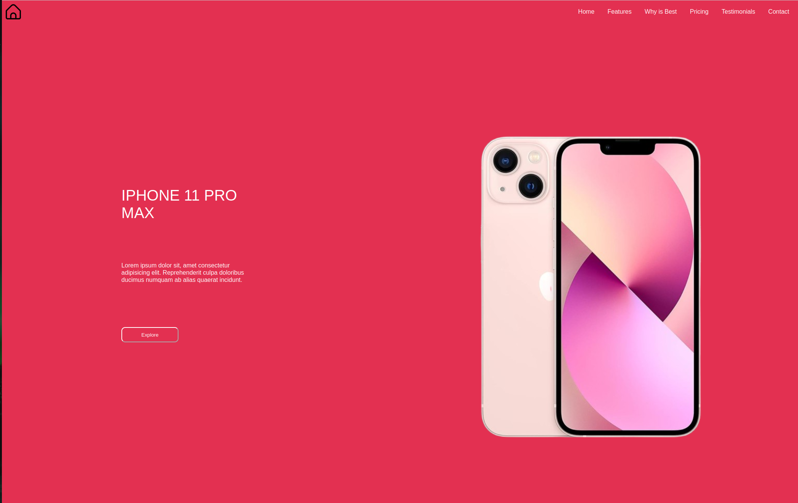
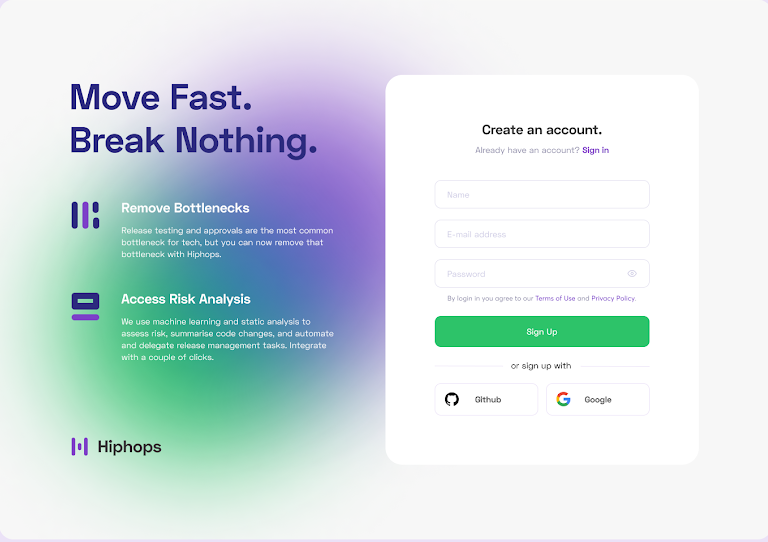
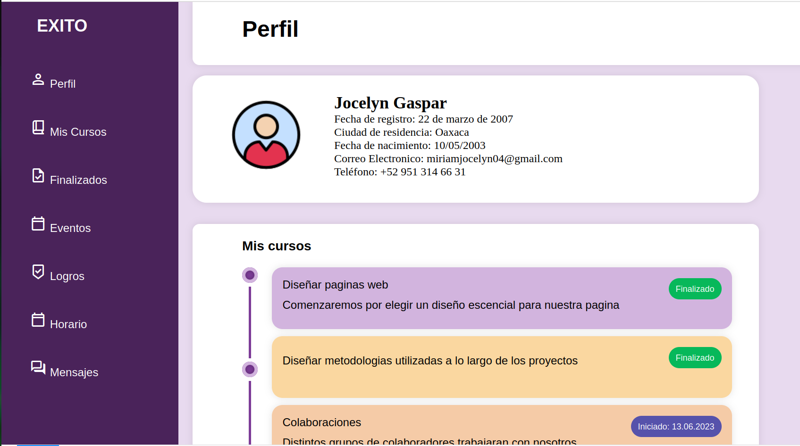

face_3
Sobre Mí
Soy Miriam Jocelyn Gaspar Sánchez, tengo 21 años y me apasiona disfrutar de la vida al máximo. Valoro mucho el tiempo que paso con mis amigos, ya que compartir momentos juntos es una de mis mayores alegrías. Me encanta salir y explorar nuevos lugares, ya sea disfrutando de la naturaleza, visitando restaurantes o simplemente paseando por la ciudad. Siempre estoy buscando nuevas experiencias que me ayuden a crecer y aprender.
folder_open
Portafolio de Evidencias Programación Web
brightness_high
Sistema Solar
Este proyecto consiste en una página web que explora los planetas del sistema solar. Cada sección presenta información detallada sobre las características y curiosidades de cada planeta. Utilizando HTML se ha diseñado una interfaz que permite a los usuarios navegar fácilmente a través de los diferentes cuerpos celestes, complementada con imágenes. La página busca educar y fascinar a los visitantes sobre nuestro sistema solar.
phone_iphone
Iphone 10
Esta página está diseñada para ofrecer una presentación atractiva y concisa del iPhone 10. Con un diseño limpio y moderno, la estructura incluye un encabezado llamativo que destaca el modelo, seguido de una descripción detallada de sus características más relevantes.

login
Login
Esta página de inicio de sesión está diseñada para proporcionar un acceso fácil y seguro a los usuarios. Con un diseño limpio y moderno, la interfaz incluye campos para el nombre de usuario y la contraseña, así como botones para iniciar sesión y recuperar la contraseña.

dashboard
Dashboard
Se elaboró un diseño sobre la página de perfil, en la que se muestran varias divisiones.
